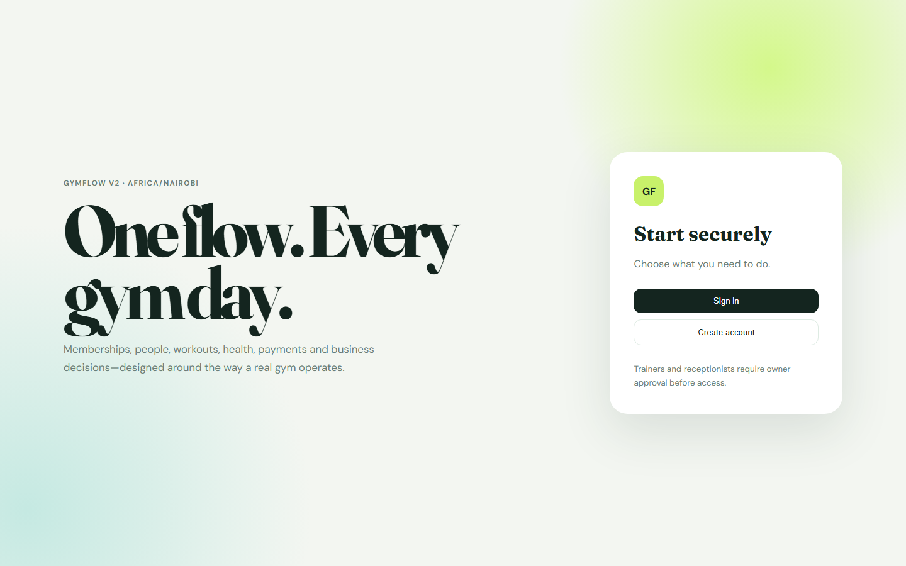
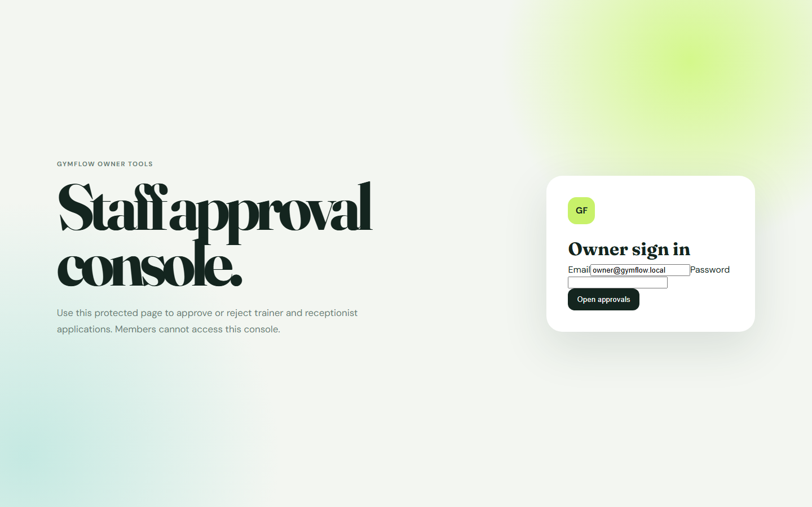
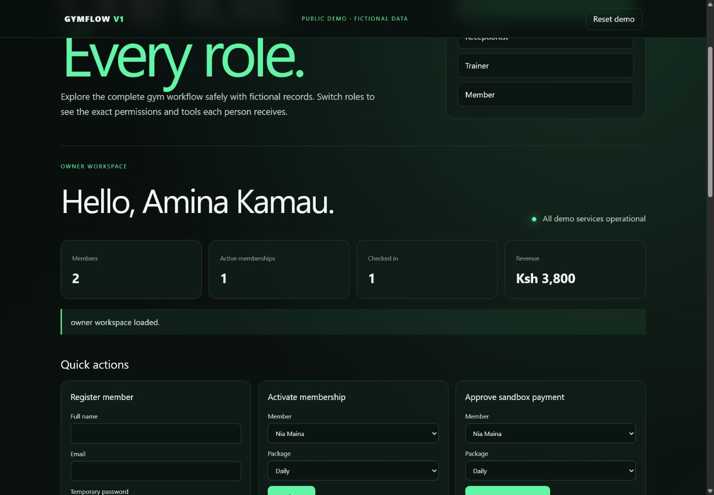

Frontend Development
Responsive, accessible interfaces that look sharp and feel effortless across devices.
Available for opportunities
I'm Chege John Brian Kuria, a software developer creating thoughtful web applications, reliable systems and intuitive digital experiences.

Based in Kiambu, Kenya · Available for Nairobi & Remote opportunities ●
I turn real-world challenges into clean, useful software.
I am pursuing a Bachelor of Science in Software Development at KCA University, Main Campus, and expect to complete my studies in August 2026. My work combines technical thinking, careful design and a strong interest in systems that help people and businesses operate better.
I enjoy working across the stack—from shaping an interface that feels natural to designing APIs, databases and secure role-based workflows behind it.
From the first idea to a working product, I focus on solutions that are usable, maintainable and ready to grow.
Responsive, accessible interfaces that look sharp and feel effortless across devices.
Secure application logic, authentication and REST APIs that keep products working reliably.
Structured databases, role-based workflows and dashboards that turn data into action.
Testing, debugging, documentation and deployment practices for dependable software.
Additional programming experienceJavaC#C++
A growing collection of systems designed around real people and operational needs.


01Full-stack system + public demo · 2026
A gym operations platform designed for owners, receptionists, trainers and members. The live showcase is a safe demo edition with fictional data and browser-local storage; the complete Python and SQLite system remains the authoritative project.
Public demo edition Fictional data · No real payments · Data stays in your browser
Role interface gallery

Owner workspace: revenue metrics, member registration, memberships, payments, attendance, scheduling, workouts and expenses.
Case study
The final report, implementation plan, test plan, training manual, presentation and access evidence are not distributed as public downloads.
Designing a digital home for
ideas, progress & possibilities.
Portfolio platform · 2026
This live website presents my journey, capabilities and software projects through a polished, responsive experience. It serves as a central platform for professional opportunities and client connections.
Project register
Academic projects and technical experiments are recorded independently from production applications. Each entry states exactly what it is, its status, and the documents currently available.
Classification of medical appointment no-shows and regression analysis of concrete strength using Logistic Regression, Linear SVC, Ridge and Lasso models.
Classification and regression work using Decision Trees, Random Forest and Gradient Boosting on COVID-risk and automobile-price datasets.
A multi-session strategy prototype for Asian, London and New York opening-candle signals, with configurable risk multiples, filters and confirmation logic.
My current focus is strengthening full-stack development skills and turning academic knowledge into production-minded software.
Developing GymFlow and this professional portfolio.
Completing my BSc. in Software Development at KCA University.
Seeking opportunities to contribute, learn and build valuable digital solutions.
Let's create something useful
Open to internships, junior developer roles,
collaborations and freelance projects.